TalkingData AdTracking - Desafio de detecção de fraude
Carlos Virgílio Beltrão Lessa
17 de janeiro de 2021
1 Objetivo
Detecção de Fraudes no Tráfego de Cliques em Propagandas de Aplicações Mobile As empresas de publicidade online lidam com uma grande quantidade de anúncios de clique, muitos são cliques fraudulentos. Este projeto envolve a investigação do comportamento do clique do usuário e da taxa de download. O objetivo é prever se um usuário fará o download do aplicativo mobile depois de clicar em seu anúncio. Isso será feito comparando a taxa de cliques dos usuários com os eventos de download do aplicativo. Analisando esses eventos fica claro que os downloads são muito raros quando comparados com os cliques, ou seja, os usuários clicam nos anúncios, mas não baixam o aplicativo posteriormente. Este trabalho destaca a importância da análise exploratória de dados, engenharia de atributos e o uso de algoritmos apropriados para lidar com dados desbalanceados.
O risco de fraude está em toda parte, mas para as empresas que anunciam online, a fraude de cliques pode acontecer em um volume avassalador, resultando em dados de cliques enganosos e dinheiro desperdiçado. Os canais de anúncios podem aumentar os custos simplesmente quando pessoas ou bots clicam nos anúncios em grande escala, o que na prática não gera o resultado esperado. Com mais de 1 bilhão de dispositivos móveis em uso todos os meses, a China é o maior mercado móvel do mundo e, portanto, sofre com grandes volumes de tráfego fraudulento.
A TalkingData (https://www.talkingdata.com), a maior plataforma de Big Data independente da China, cobre mais de 70% dos dispositivos móveis ativos em todo o país. Eles lidam com 3 bilhões de cliques por dia, dos quais 90% são potencialmente fraudulentos. Sua abordagem atual para impedir fraudes de cliques para desenvolvedores de aplicativos é medir a jornada do clique de um usuário em todo o portfólio e sinalizar endereços IP que produzem muitos cliques, mas nunca acabam instalando aplicativos. Com essas informações, eles criaram uma lista negra de IPs e uma lista negra de dispositivos.
Embora bem-sucedidos, eles querem estar sempre um passo à frente dos fraudadores e pediram a sua ajuda para desenvolver ainda mais a solução. Você está desafiado a criar um algoritmo que possa prever se um usuário fará o download de um aplicativo depois de clicar em um anúncio de aplicativo para dispositivos móveis.
2 Dados
Os dados de treino fornecidos pela TalkingData foram coletados entre 06/11 e 09/11/2017 e consistem em 08 variáveis e 185 milhões de observações. Os dados de teste foram coletados no dia 10/11/2017 e consistem em 07 variáveis e 18 milhões de observações. Ambos os conjuntos de dados estão em formato CSV.
3 Pacotes necessários
# Manipulação de dados
library(data.table)
library(dplyr)
library(purrr)
library(tibble)
library(janitor)
# Trabalhar com datas
library(lubridate)
# Balanceamento de dataset
library(ROSE)
# Seleção de variáveis
library(FSelector)
library(randomForest)
# Gráficos
library(ggplot2)
library(ggpubr)
library(ggalluvial)
# Tabelas
library(kableExtra)4 Carga dos dados
Os datasets são grandes, então usaremos fread do pacote data.table.
A variável attributed_time não existe no dataset de teste, por isso não será carregada.
# Carrega o dataset de treino.
system.time(treino <- fread("train.csv", na.strings=c("","NA"),
drop = "attributed_time", nThread = 16 ))## user system elapsed
## 28.649 2.505 9.381# Carrega os dados de teste
system.time(teste <- fread("test.csv", na.strings=c("","NA"),
nThread = 16 ))## user system elapsed
## 2.879 0.244 0.9595 Análise exploratória
5.1 Verificar a estrutura e resumo estatístico de ambos datsets
- Verificar dados missing.
- Verificar a estrutura.
- Verificar resumo estatístico.
# Dados de treino
colSums(is.na(treino))## ip app device os channel
## 0 0 0 0 0
## click_time is_attributed
## 0 0str(treino)## Classes 'data.table' and 'data.frame': 184903890 obs. of 7 variables:
## $ ip : int 83230 17357 35810 45745 161007 18787 103022 114221 165970 74544 ...
## $ app : int 3 3 3 14 3 3 3 3 3 64 ...
## $ device : int 1 1 1 1 1 1 1 1 1 1 ...
## $ os : int 13 19 13 13 13 16 23 19 13 22 ...
## $ channel : int 379 379 379 478 379 379 379 379 379 459 ...
## $ click_time : chr "2017-11-06 14:32:21" "2017-11-06 14:33:34" "2017-11-06 14:34:12" "2017-11-06 14:34:52" ...
## $ is_attributed: int 0 0 0 0 0 0 0 0 0 0 ...
## - attr(*, ".internal.selfref")=<externalptr>summary(treino[treino$is_attributed==0])## ip app device os
## Min. : 1 Min. : 0.00 Min. : 0.0 Min. : 0.00
## 1st Qu.: 40216 1st Qu.: 3.00 1st Qu.: 1.0 1st Qu.: 13.00
## Median : 79353 Median : 12.00 Median : 1.0 Median : 18.00
## Mean : 90690 Mean : 11.97 Mean : 21.7 Mean : 22.67
## 3rd Qu.:118146 3rd Qu.: 15.00 3rd Qu.: 1.0 3rd Qu.: 19.00
## Max. :364778 Max. :768.00 Max. :4227.0 Max. :956.00
## channel click_time is_attributed
## Min. : 0.0 Length:184447044 Min. :0
## 1st Qu.:145.0 Class :character 1st Qu.:0
## Median :258.0 Mode :character Median :0
## Mean :268.7 Mean :0
## 3rd Qu.:379.0 3rd Qu.:0
## Max. :500.0 Max. :0summary(treino[treino$is_attributed==1])## ip app device os
## Min. : 1 Min. : 0.00 Min. : 0.00 Min. : 0.00
## 1st Qu.: 74987 1st Qu.: 12.00 1st Qu.: 1.00 1st Qu.: 13.00
## Median :157120 Median : 19.00 Median : 1.00 Median : 19.00
## Mean :166084 Mean : 29.78 Mean : 31.81 Mean : 24.49
## 3rd Qu.:255006 3rd Qu.: 35.00 3rd Qu.: 1.00 3rd Qu.: 24.00
## Max. :364778 Max. :768.00 Max. :4223.00 Max. :866.00
## channel click_time is_attributed
## Min. : 0.0 Length:456846 Min. :1
## 1st Qu.:113.0 Class :character 1st Qu.:1
## Median :213.0 Mode :character Median :1
## Mean :205.7 Mean :1
## 3rd Qu.:274.0 3rd Qu.:1
## Max. :498.0 Max. :1Três variáveis apresentam médias com diferenças acentuadas quando confrontados os cliques legítimos (is_attributed==1) e fraudulentos (is_attributed==0). Média app: cliques legítimos 2,49X fraudulentos. Média ip: cliques legítimos 1,83X fraudulentos. Média device: cliques legítimos 1,45X fraudulentos.
# Dados de teste
colSums(is.na(teste))## click_id ip app device os channel click_time
## 0 0 0 0 0 0 0str(teste)## Classes 'data.table' and 'data.frame': 18790469 obs. of 7 variables:
## $ click_id : int 0 1 2 3 4 5 6 7 9 8 ...
## $ ip : int 5744 119901 72287 78477 123080 110769 12540 88637 14932 123701 ...
## $ app : int 9 9 21 15 12 18 3 27 18 12 ...
## $ device : int 1 1 1 1 1 1 1 1 1 1 ...
## $ os : int 3 3 19 13 13 13 1 19 10 53 ...
## $ channel : int 107 466 128 111 328 107 137 153 107 424 ...
## $ click_time: chr "2017-11-10 04:00:00" "2017-11-10 04:00:00" "2017-11-10 04:00:00" "2017-11-10 04:00:00" ...
## - attr(*, ".internal.selfref")=<externalptr>summary(teste)## click_id ip app device
## Min. : 0 Min. : 0 Min. : 0.00 Min. : 0.00
## 1st Qu.: 4697617 1st Qu.: 31558 1st Qu.: 3.00 1st Qu.: 1.00
## Median : 9395234 Median : 63936 Median : 12.00 Median : 1.00
## Mean : 9395234 Mean : 63069 Mean : 12.21 Mean : 1.73
## 3rd Qu.:14092851 3rd Qu.: 95316 3rd Qu.: 18.00 3rd Qu.: 1.00
## Max. :18790468 Max. :126413 Max. :521.00 Max. :3031.00
## os channel click_time
## Min. : 0.00 Min. : 0.0 Length:18790469
## 1st Qu.: 13.00 1st Qu.:135.0 Class :character
## Median : 18.00 Median :236.0 Mode :character
## Mean : 18.73 Mean :264.8
## 3rd Qu.: 19.00 3rd Qu.:401.0
## Max. :604.00 Max. :498.05.2 Dicionário de dados
| Variável | Descrição |
|---|---|
| ip | Endereço IP do clique. |
| app | ID do aplicativo para marketing. |
| device | ID do tipo de dispositivo do telefone celular do usuário. |
| os | ID da versão do sistema operacional do telefone celular do usuário. |
| channel | ID do canal do editor de anúncios para celular. |
| click_time | Data/hora do clique |
| attributed_time | Data/hora se o usuário baixar o aplicativo depois de clicar em um anúncio. |
| is_attributed | Variável a ser prevista, indicando que o aplicativo foi baixado. |
5.3 Diferenças no dicionário de dados de teste
| Variável | Descrição |
|---|---|
| click_id | Variável adicional para identificar a previsão. |
| attributed_time | Não existe. |
| is_attributed | Não existe - variável alvo. |
# Guarda click_id em um objeto e remove a variável.
click_id <- teste$click_id
teste$click_id <- NULL5.4 Diagrama aluvial
Esse tipo de gráfico é útil para descobrir interações entre diversas variáveis. O tamanho vertical de cada bloco é proporcional à frequência da variável. O próximo gráfico mostra altos fluxos de device 0 e 1 para os os, app e channel correspondentes quando is_attributed é igual a 1. Em particular, podemos ver que device== 1 não usa os==0 e device==0 não usa os==19, etc.
Gráfico extraído de: 1
# Cria um dataset a partir de uma amostra de 3 milhões de observações
# Com o dataset completo (185 milhões) iria demorar muito a geração do gráfico
set.seed(0)
alluvia.ds <-data.frame(treino[sample(.N, 3e6),][is_attributed == 1]
[, freq := .N, keyby = .(device, os, app, channel)]
[freq > 15] %>% unique())
# Plota o gráfico
ggplot(alluvia.ds,aes(weight = freq, axis1 = device, axis2 = os,
axis3 = app, axis4 = channel)) +
geom_alluvium(aes(fill = is_attributed), width = 1/12) +
geom_stratum(width = 1/12, fill = "black", color = "grey") +
geom_label(stat = "stratum", aes(label = after_stat(stratum))) +
theme_bw() +
scale_x_continuous(breaks = 1:4, labels = c("device", "os", "app", "channel")) 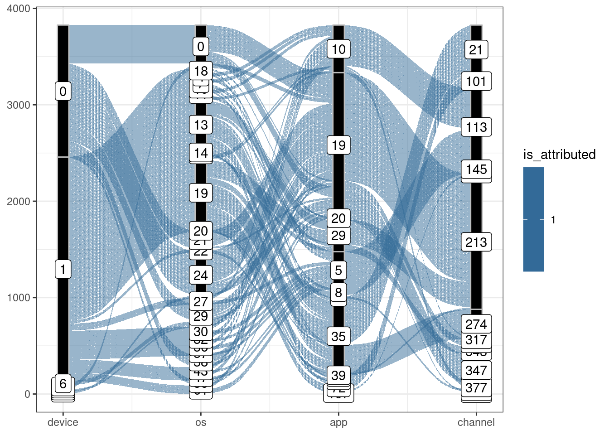
5.5 Distribuição de classes
# Transformar a variável alvo em categórica
system.time(treino$is_attributed <- as.factor(treino$is_attributed))## user system elapsed
## 3.266 1.996 5.313# Verificar a distribuição.
kable(tabyl(treino$is_attributed) %>% adorn_pct_formatting()) %>%
kable_styling(full_width = F,
bootstrap_options = c("striped","hover","condensed","responsive"))| treino$is_attributed | n | percent |
|---|---|---|
| 0 | 184447044 | 99.8% |
| 1 | 456846 | 0.2% |
O conjunto de dados está extremamente desbalanceado. Temos 99.8% de registros para cliques fraudulentos e 0.2% para cliques legítimos.
5.6 Balancear os dados com undersampling
system.time(treino <- ovun.sample(is_attributed ~ ., data = treino,
method = "under", p = 0.5, seed = 1 )$data)## user system elapsed
## 168.199 16.922 186.885kable(tabyl(treino$is_attributed) %>% adorn_pct_formatting()) %>%
kable_styling(full_width = F,
bootstrap_options = c("striped","hover","condensed","responsive"))| treino$is_attributed | n | percent |
|---|---|---|
| 0 | 457243 | 50.0% |
| 1 | 456846 | 50.0% |
Dados balanceados. Os 185 milhões de observações foram reduzidos para 914 mil
5.7 Verificar a distribuição dos valores de app, device, os e channel em função da variável alvo
ggplot(treino, aes(x = ip, fill = is_attributed)) +
geom_density(alpha = 0.5) + theme_bw()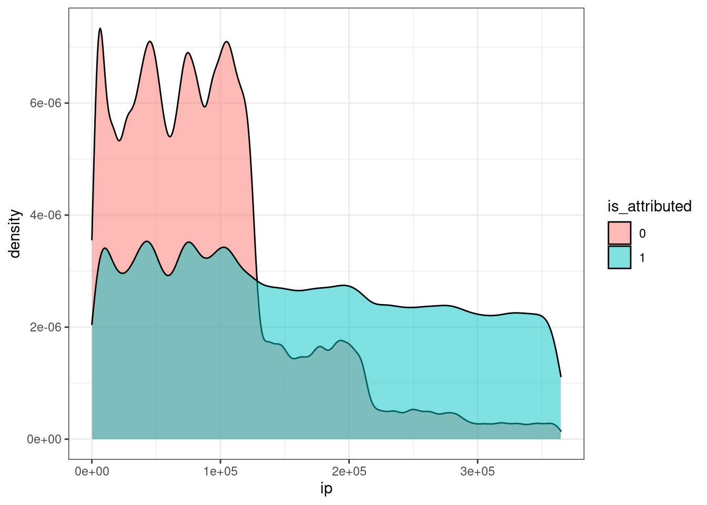
ggplot(treino, aes(x = app, fill = is_attributed)) +
geom_density(alpha = 0.5) + theme_bw()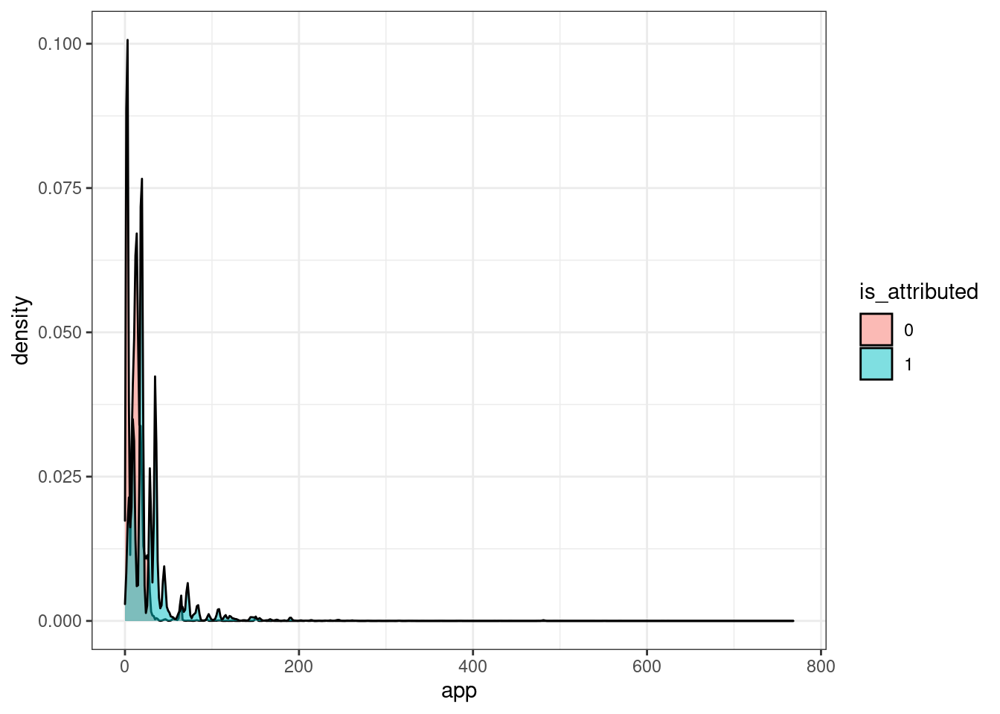
ggplot(treino, aes(x = device, fill = is_attributed)) +
geom_density(alpha = 0.5) + theme_bw()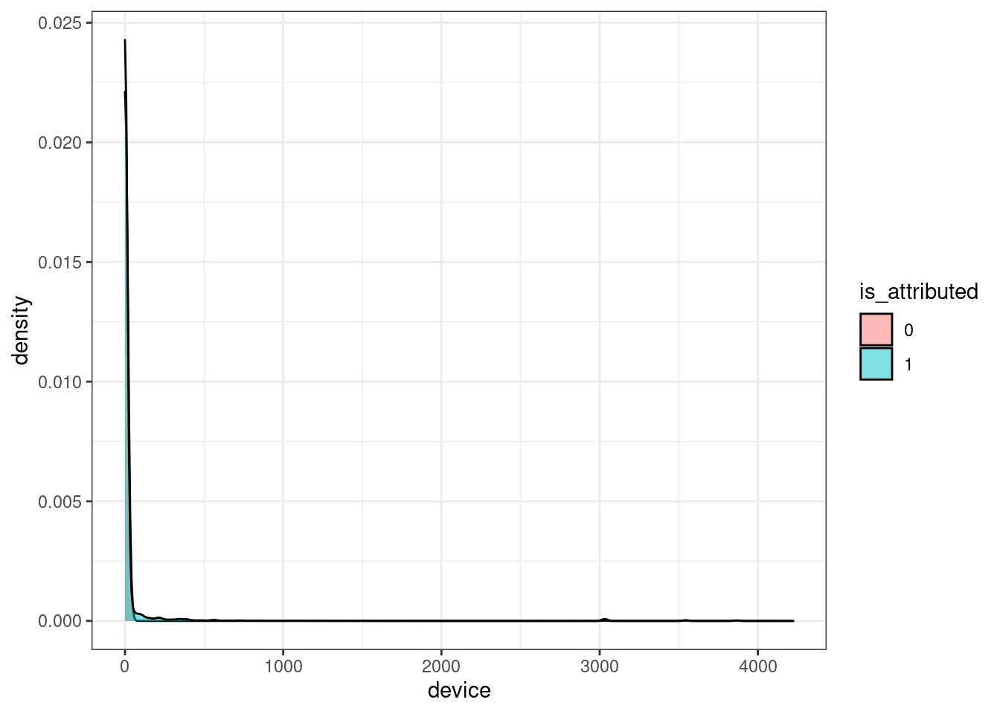
ggplot(treino, aes(x = os, fill = is_attributed)) +
geom_density(alpha = 0.5) + theme_bw()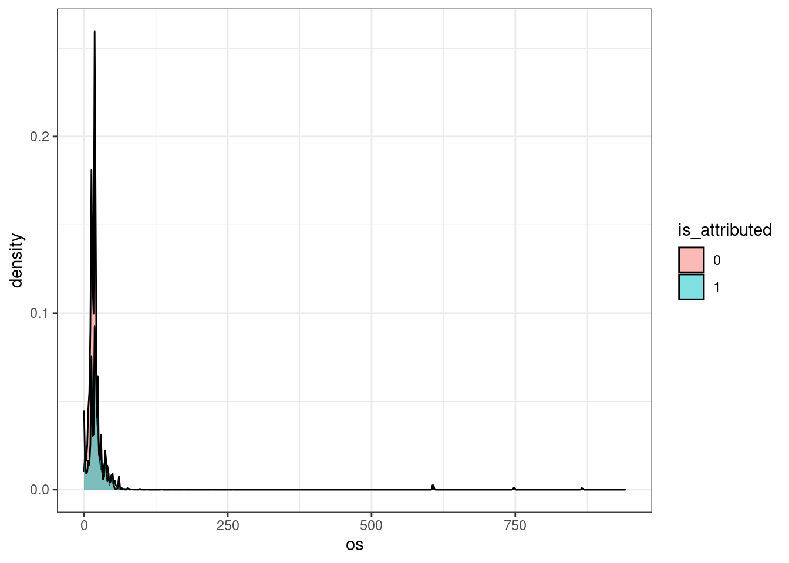
ggplot(treino, aes(x = channel, fill = is_attributed)) +
geom_density(alpha = 0.5) + theme_bw()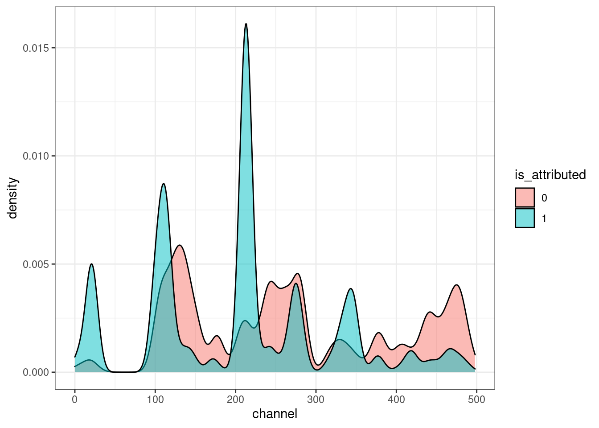
Apenas a variável device não demonstrou densidade diferenciada entre cliques legítimos e fraudulentos.
6 Engenharia de atributos
6.1 Obter data e hora a partir da variável attribute_time
Primeiro nos dados de treino.
treino$day <- day(ymd_hms(treino$click_time))
treino$hour <- hour(ymd_hms(treino$click_time))
treino$minute <- minute(ymd_hms(treino$click_time))
treino$second <- second( ymd_hms(treino$click_time))
# Verificar a relevância de cada variável nova em relação a variável alvo
ggplot(treino, aes(x = day, fill = is_attributed)) +
geom_density(alpha = 0.5) + theme_bw()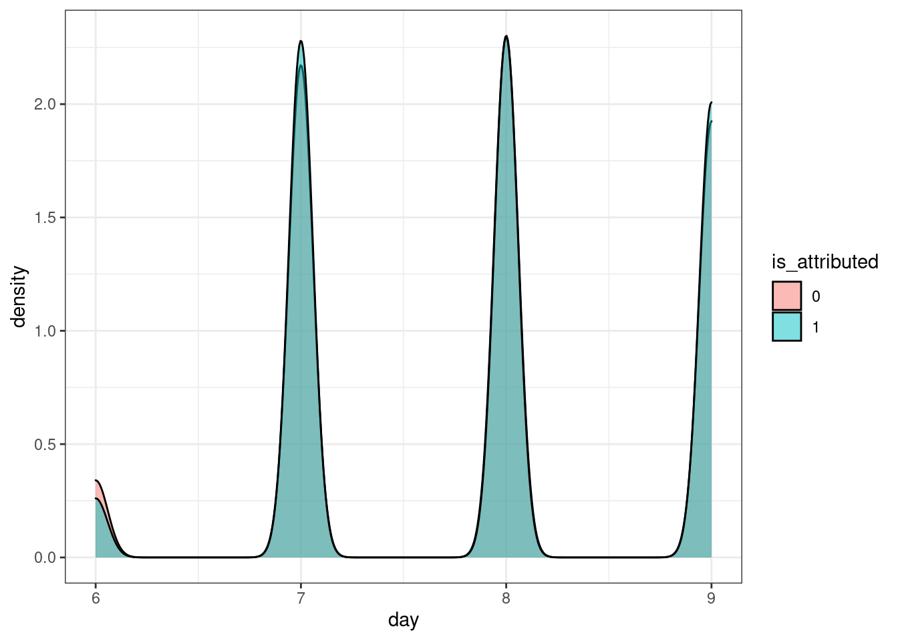
ggplot(treino, aes(x = hour, fill = is_attributed)) +
geom_density(alpha = 0.5) + theme_bw()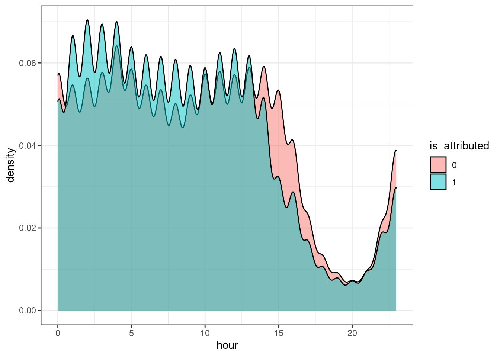
ggplot(treino, aes(x = minute, fill = is_attributed)) +
geom_density(alpha = 0.5) + theme_bw()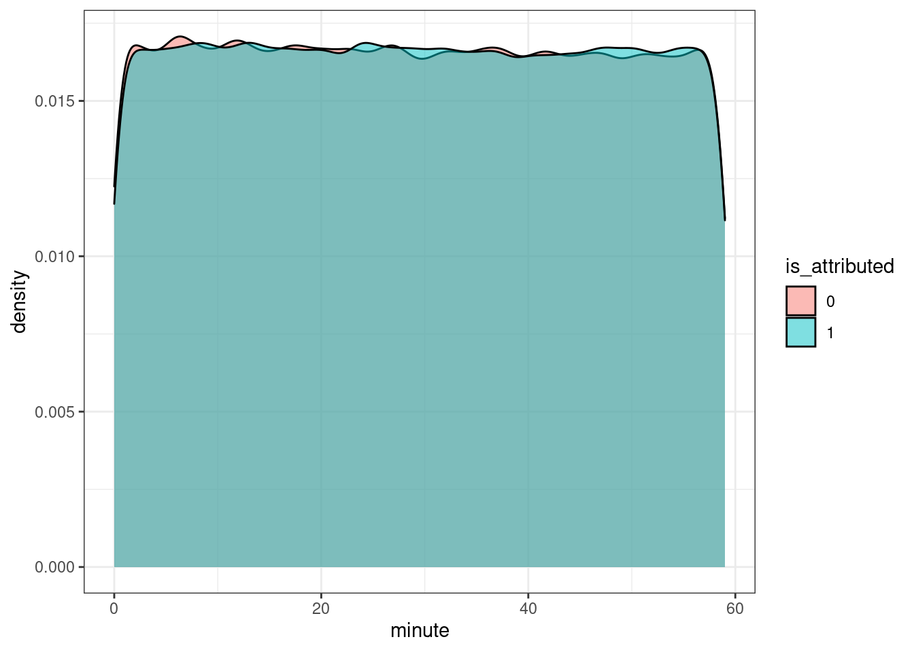
ggplot(treino, aes(x = second, fill = is_attributed)) +
geom_density(alpha = 0.5) + theme_bw()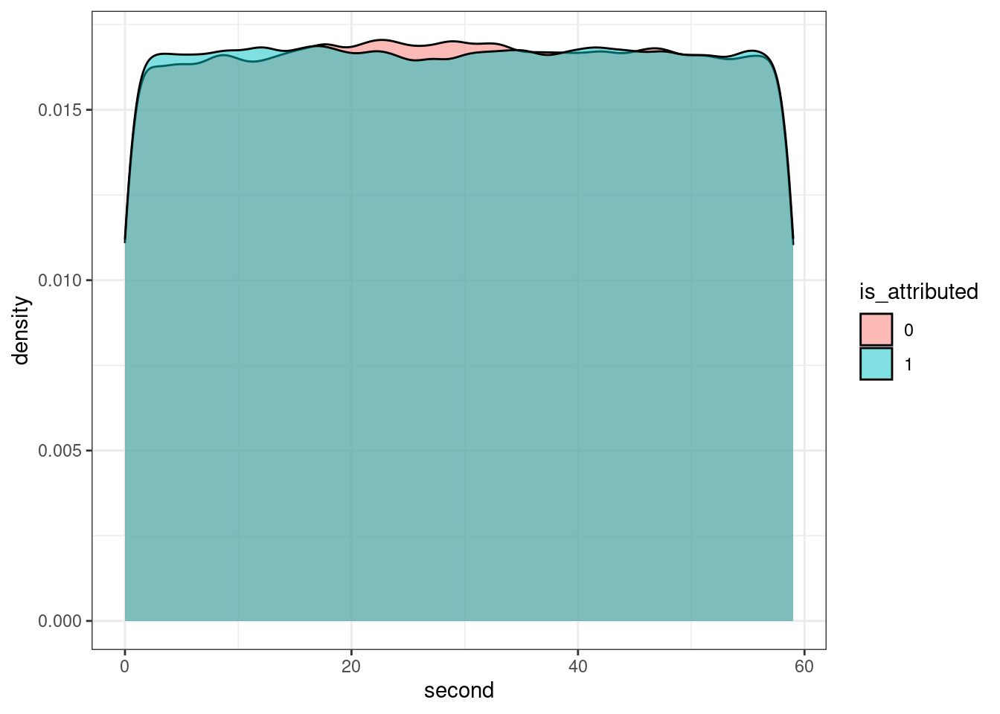
Apenas em relação à hora há uma diferença significativa na densidade, os cliques legítimos são mais variados, enquanto os cliques fraudulentos são mais uniformes.
Em seguida nos dados de teste.
teste$day <- day(ymd_hms(teste$click_time))
teste$hour <- hour(ymd_hms(teste$click_time))
teste$minute <- minute(ymd_hms(teste$click_time))
teste$second <- second( ymd_hms(teste$click_time))
ggplot(teste, aes(x = hour, fill = day)) +
geom_density(alpha = 0.5) + theme_bw()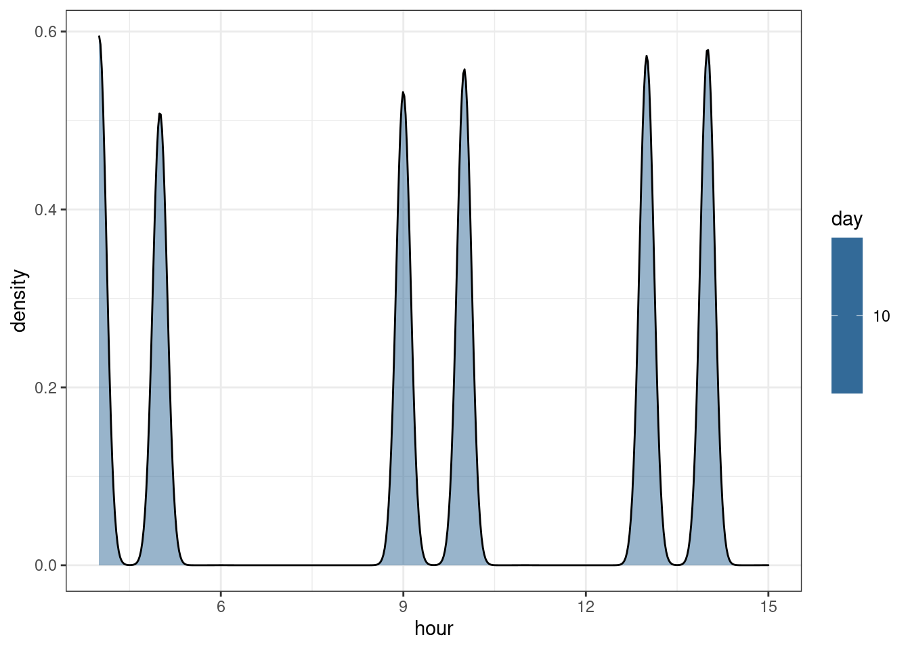
ggplot(teste, aes(x = minute, fill = day)) +
geom_density(alpha = 0.5) + theme_bw()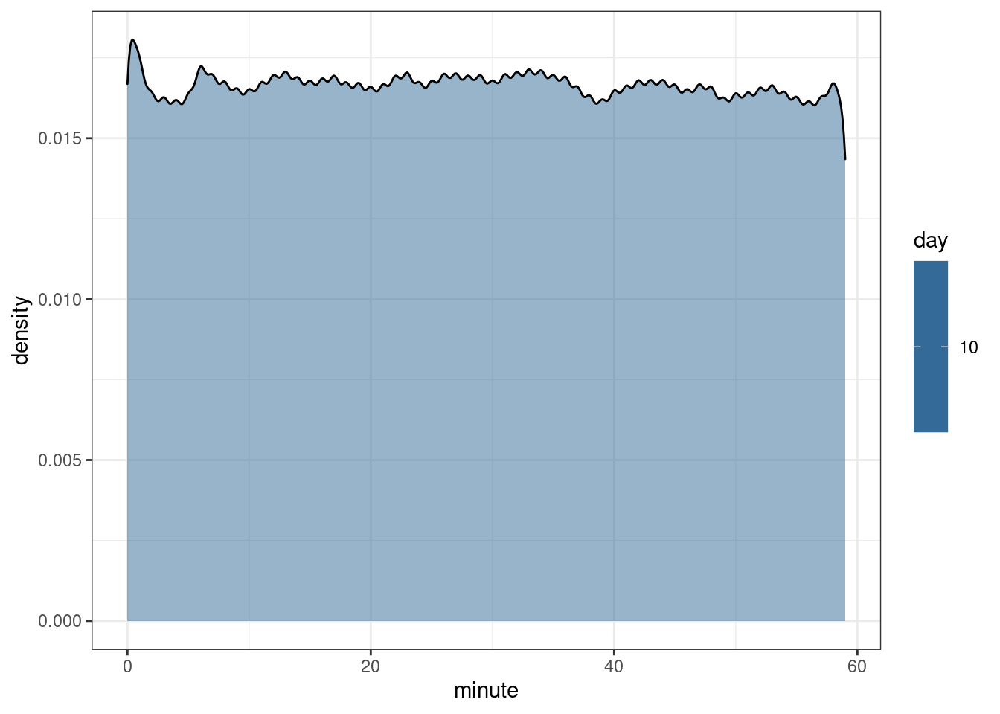
ggplot(teste, aes(x = second, fill = day)) +
geom_density(alpha = 0.5) + theme_bw()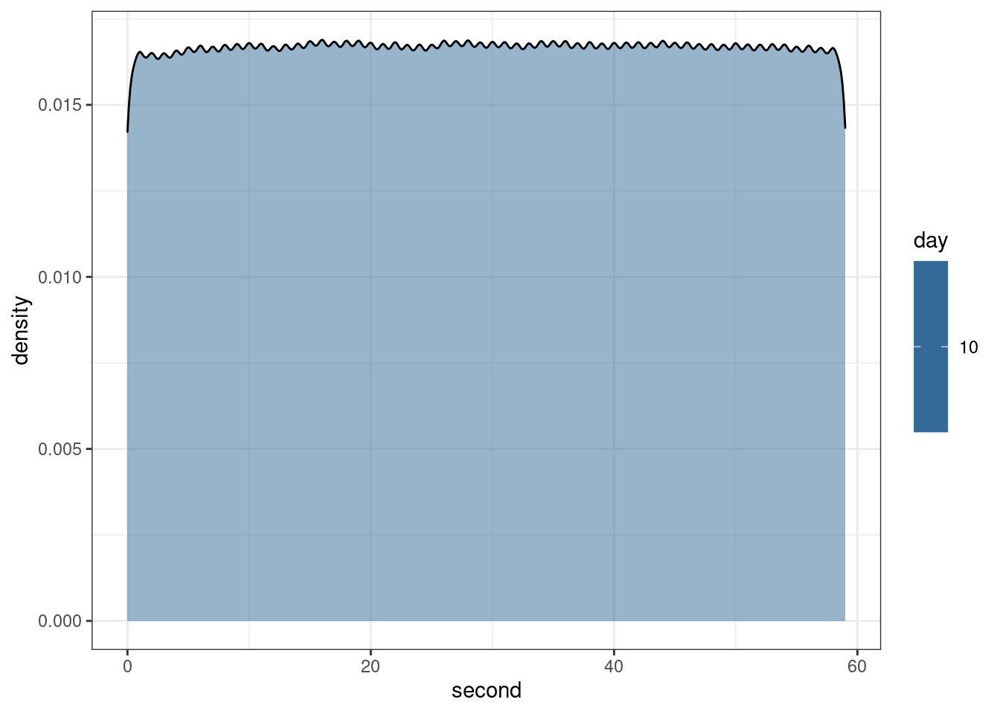
kable(tabyl(teste$hour) %>% adorn_pct_formatting()) %>%
kable_styling(full_width = F,
bootstrap_options = c("striped","hover","condensed","responsive"))| teste$hour | n | percent |
|---|---|---|
| 4 | 3344125 | 17.8% |
| 5 | 2858427 | 15.2% |
| 6 | 381 | 0.0% |
| 9 | 2984808 | 15.9% |
| 10 | 3127993 | 16.6% |
| 11 | 413 | 0.0% |
| 13 | 3212566 | 17.1% |
| 14 | 3261257 | 17.4% |
| 15 | 499 | 0.0% |
6.2 Obter frequência de acessos por hora
Nos dados de teste há um padrão de frequência de horas bem definido. As horas 4,5,9,10,13 e 14 tem suas frequências em torno de 15 a 18%. As horas 6,11 e 15 tem frequências próximas a zero. Os demais horários não existem na base de teste, pois o intervalo dos dados de teste é das 04:00:00 do dia 10/11/2017 às 15:00:00 do mesmo dia.
Criar variável para agrupar as frequências em três valores.
frequentes <- c(4,5,9,10,13,14)
nao_frequentes <- c(6,11,15)
treino$freq_hour <- ifelse(treino$hour %in% frequentes,1,
ifelse(treino$hour %in% nao_frequentes,2,3))
teste$freq_hour <- ifelse(teste$hour %in% frequentes,1,
ifelse(teste$hour %in% nao_frequentes,2,3))As variáveis de minuto e segundo não mostram relevância, serão removidas.
A variável click_time não é mais necessária, será removida.
treino$minute <- NULL
treino$second <- NULL
teste$minute <- NULL
teste$second <- NULL
treino$click_time <- NULL
teste$click_time <- NULL6.3 Grupos de acesso por IP, dia, hora, aplicativo e SO
Criar variáveis derivadas de contagens de agrupamentos de outras variáveis. O objetivo é identificar, por exemplo, se um aplicativo sendo executado em certo SO, oriundo de um determinado IP em determinados dia e hora baixou o aplicativo ou apenas clicou no anúncio.
Alguns trechos de código inspirados de: 2
# Dados de treino
setDT(treino)[, ip_day_freq_hour := .N, by = .(ip, day, freq_hour)]
setDT(treino)[, ip_day_hour := .N, by = .(ip, day, hour)]
setDT(treino)[, ip_day_hour_os := .N, by = .(ip, day, hour, os)]
setDT(treino)[, ip_day_hour_app := .N, by = .(ip, day, hour, app)]
setDT(treino)[, ip_day_hour_app_os := .N, by = .(ip, day, hour, app, os)]
setDT(treino)[, app_day_hour := .N, by = .(app, day, hour)]
# Dados de teste
setDT(teste)[, ip_day_freq_hour := .N, by = .(ip, day, freq_hour)]
setDT(teste)[, ip_day_hour := .N, by = .(ip, day, hour)]
setDT(teste)[, ip_day_hour_os := .N, by = .(ip, day, hour, os)]
setDT(teste)[, ip_day_hour_app := .N, by = .(ip, day, hour, app)]
setDT(teste)[, ip_day_hour_app_os := .N, by = .(ip, day, hour, app, os)]
setDT(teste)[, app_day_hour := .N, by = .(app, day, hour)]As variáveis ip e freq_hour não são mais necessárias, serão removidas.
treino$ip <- NULL
treino$freq_hour <- NULL
teste$ip <- NULL
teste$freq_hour <- NULL
# Verificar a estrutura dos datasets
str(treino)## Classes 'data.table' and 'data.frame': 914089 obs. of 13 variables:
## $ app : int 13 12 12 18 10 9 3 26 18 3 ...
## $ device : int 1 1 1 1 1 1 1 1 1 1 ...
## $ os : int 15 26 13 22 8 19 30 32 22 13 ...
## $ channel : int 477 205 481 439 113 134 173 477 121 480 ...
## $ is_attributed : Factor w/ 2 levels "0","1": 1 1 1 1 1 1 1 1 1 1 ...
## $ day : int 8 7 6 9 7 8 9 9 8 7 ...
## $ hour : int 2 9 23 11 0 0 8 6 12 23 ...
## $ ip_day_freq_hour : int 6 7 1 2 1 3 3 17 12 7 ...
## $ ip_day_hour : int 2 3 1 2 1 2 1 7 1 1 ...
## $ ip_day_hour_os : int 1 1 1 1 1 1 1 1 1 1 ...
## $ ip_day_hour_app : int 1 2 1 2 1 1 1 1 1 1 ...
## $ ip_day_hour_app_os: int 1 1 1 1 1 1 1 1 1 1 ...
## $ app_day_hour : int 213 1115 689 1028 238 1178 1040 199 941 876 ...
## - attr(*, ".internal.selfref")=<externalptr>str(teste)## Classes 'data.table' and 'data.frame': 18790469 obs. of 12 variables:
## $ app : int 9 9 21 15 12 18 3 27 18 12 ...
## $ device : int 1 1 1 1 1 1 1 1 1 1 ...
## $ os : int 3 3 19 13 13 13 1 19 10 53 ...
## $ channel : int 107 466 128 111 328 107 137 153 107 424 ...
## $ day : int 10 10 10 10 10 10 10 10 10 10 ...
## $ hour : int 4 4 4 4 4 4 4 4 4 4 ...
## $ ip_day_freq_hour : int 91 2083 2135 1201 208 399 412 558 607 2718 ...
## $ ip_day_hour : int 34 403 229 239 60 120 90 93 106 539 ...
## $ ip_day_hour_os : int 3 17 69 98 27 20 6 23 1 1 ...
## $ ip_day_hour_app : int 8 50 13 10 7 16 16 1 13 52 ...
## $ ip_day_hour_app_os: int 1 3 7 9 3 2 1 1 1 1 ...
## $ app_day_hour : int 475418 475418 77207 209436 396028 331896 444372 30530 331896 396028 ...
## - attr(*, ".internal.selfref")=<externalptr>Foram removidas as variáveis originais click_time e ip, as variáveis auxiliares minute, second e freq_hour em ambos datasets.
Foram acrescentadas nos dois datasets as variáveis hour, ip_day_freq_hour, ip_day_hour, ip_day_hour_os, ip_day_hour_app, ip_day_hour_app_os e app_day_hour
7 Seleção de variáveis
Utilizaremos dois métodos para obter lista com as variáveis mais significativas: Random Forest e Chi Quadrado.
7.1 Seleção de variáveis – Random Forest
# Criando um modelo para identificar com randomForest
modelo <- randomForest(is_attributed ~ . ,
data = treino[sample(.N, 100000), ],
ntree = 100,
nodesize = 10,
importance = TRUE)
# Plotando as variáveis por grau de importância
varImpPlot(modelo)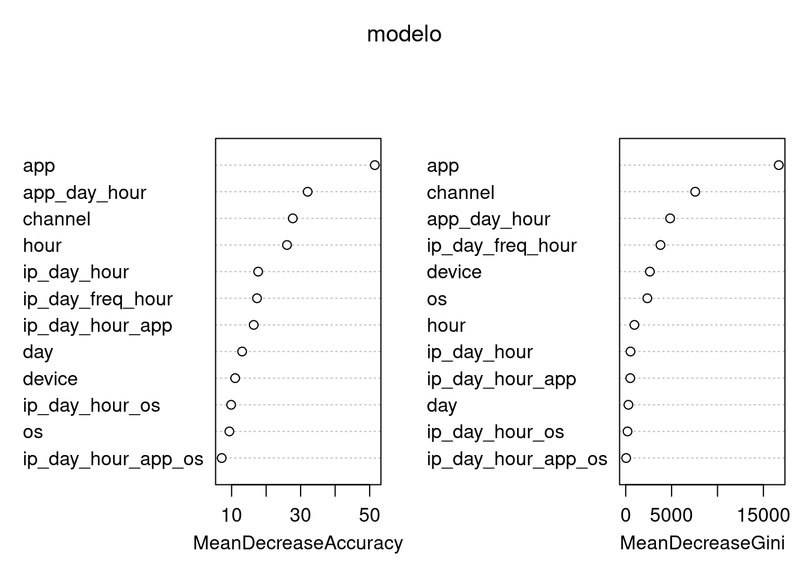
# Listando as seis variáveis mais importantes segundo acurácia
kable(modelo$importance %>% as.data.frame() %>%
select(MeanDecreaseAccuracy) %>%
arrange(desc(MeanDecreaseAccuracy)) %>%
head(n = 6)) %>%
kable_styling(full_width = F,
bootstrap_options = c("striped","hover","condensed","responsive"))| MeanDecreaseAccuracy | |
|---|---|
| app | 0.2749008 |
| channel | 0.0954770 |
| app_day_hour | 0.0690890 |
| device | 0.0406571 |
| ip_day_freq_hour | 0.0237369 |
| os | 0.0206568 |
# Listando as seis variáveis mais importantes segundo gini
kable(modelo$importance %>% as.data.frame() %>%
select(MeanDecreaseGini) %>%
arrange(desc(MeanDecreaseGini)) %>%
head(n = 6)) %>%
kable_styling(full_width = F,
bootstrap_options = c("striped","hover","condensed","responsive"))| MeanDecreaseGini | |
|---|---|
| app | 16675.881 |
| channel | 7572.768 |
| app_day_hour | 4839.547 |
| ip_day_freq_hour | 3788.245 |
| device | 2633.464 |
| os | 2356.045 |
7.2 Seleção de variáveis – Chi Quadrado
# Método do chi.squared
variaveis <- chi.squared(is_attributed ~ ., treino[sample(.N, 100000), ])
# Listando as seis variáveis mais importantes segundo chi.squared
kable(variaveis %>% arrange(desc(attr_importance)) %>% head(n = 6)) %>%
kable_styling(full_width = F,
bootstrap_options = c("striped","hover","condensed","responsive"))| attr_importance | |
|---|---|
| app | 0.8356441 |
| channel | 0.8218446 |
| app_day_hour | 0.7072795 |
| os | 0.4835680 |
| device | 0.4386092 |
| ip_day_freq_hour | 0.3493957 |
Independentemente do método há coincidência das variáveis mais relevantes.
7.3 Reorganização dos conjuntos de dados
Criar um vetor de caracteres contendo as seis variáveis significativas.
variaveis_imp <- cutoff.k(variaveis %>% arrange(desc(attr_importance)), 6)
# Acrescentar a variável alvo
reord_var <- c("is_attributed",variaveis_imp)
# Dataset de treino com a variável alvo e as variáveis preditoras relevantes
treino <- treino[,..reord_var]
# Dataset de teste com as preditoras relevantes
teste <- teste[,..variaveis_imp]8 Modelos
Utilizaremos quatro modelos ML da plataforma H2O.ai.
8.1 Sobre a H2O.ai
A H2O.ai é uma empresa de software visionária com sede no Vale do Silício, que tem como missão democratizar a utilização de inteligência artificial. Com um time repleto de makers, especialistas em data science e Kaggle grandmasters, a H2O.ai se tornou a líder em criar produtos e tecnologias abertas para ciência de dados e aprendizado de máquina (machine learning). 3
8.2 Iniciar o cluster e preparar os datasets
# Kit de modelos H2O
library(h2o)
levels(treino$is_attributed) = make.names(unique(treino$is_attributed))
# Inicia o cluster H2O
h2o.init(nthreads=-1, max_mem_size="40G")## Connection successful!
##
## R is connected to the H2O cluster:
## H2O cluster uptime: 8 hours 15 minutes
## H2O cluster timezone: America/Maceio
## H2O data parsing timezone: UTC
## H2O cluster version: 3.32.0.1
## H2O cluster version age: 3 months and 9 days !!!
## H2O cluster name: H2O_started_from_R_carloslessa_ehs110
## H2O cluster total nodes: 1
## H2O cluster total memory: 38.31 GB
## H2O cluster total cores: 4
## H2O cluster allowed cores: 4
## H2O cluster healthy: TRUE
## H2O Connection ip: localhost
## H2O Connection port: 54321
## H2O Connection proxy: NA
## H2O Internal Security: FALSE
## H2O API Extensions: Amazon S3, XGBoost, Algos, AutoML, Core V3, TargetEncoder, Core V4
## R Version: R version 3.6.3 (2020-02-29)# Limpa o ambiente - apenas no caso do cluster já estar em execução
h2o.removeAll()
# Não exibir a barra de progresso na saída RMarkdown
h2o.no_progress()
# Converte em dataframe H2O
system.time(h2o_treino <- as.h2o(treino))## user system elapsed
## 2.153 0.024 2.774system.time(h2o_teste <- as.h2o(teste))## user system elapsed
## 31.695 0.401 34.577# Remove datasets para liberar memória
rm(teste)
rm(treino)
# Identifica a variável alvo e as preditoras
response <- "is_attributed"
predictors <- setdiff(names(h2o_treino), response)8.3 Random Forest
Distributed Random Forest (DRF) é uma ferramenta poderosa de classificação e regressão. Quando fornecido um conjunto de dados, o DRF gera uma floresta de árvores, em vez de uma única árvore de classificação ou regressão.4
# Modelo Random Forest
system.time(model_rf <-
h2o.randomForest(x = predictors,
y = response,
training_frame = h2o_treino,
nfolds = 5,
fold_assignment = "Modulo",
ntrees = 50,
max_depth = 8,
min_rows = 1,
sample_rate = 0.7,
keep_cross_validation_predictions = T,
seed = 1))## user system elapsed
## 0.481 0.025 79.840# Previsões com Random Forest
system.time(predic_rf <- h2o.predict(model_rf, h2o_teste))## user system elapsed
## 0.158 0.010 37.624# Converter de H2O format em data frame
system.time(predic_rf.df <- as.data.frame(predic_rf))## user system elapsed
## 24.568 0.370 41.486# Salvar em formato csv para submissão no Kaggle
result_rf <- data.frame(click_id = click_id,
is_attributed = ifelse(predic_rf.df$X1 > 0.5, 1 ,0))
fwrite(result_rf,'talkingdata_kaggle_rf.csv')8.4 Gradient Boosted
Gradient Boosting Machine é um método de conjunto de aprendizagem progressiva. A heurística orientadora é que bons resultados preditivos podem ser obtidos por meio de aproximações cada vez mais refinadas.5
# Modelo Gradient Boosted
system.time(model_gbm <-
h2o.gbm(x = predictors,
y = response,
training_frame = h2o_treino,
distribution = "bernoulli",
ntrees = 50,
max_depth = 8,
min_rows = 1,
learn_rate = 0.1,
sample_rate = 0.7,
col_sample_rate = 0.9,
nfolds = 5,
fold_assignment = "Modulo",
keep_cross_validation_predictions = T,
seed = 1))## user system elapsed
## 0.486 0.028 85.041# Previsões com Gradient Boosted
system.time(predic_gbm <- h2o.predict(model_gbm, h2o_teste))## user system elapsed
## 0.172 0.010 38.588# Converter de H2O format em data frame
system.time(predic_gbm.df <- as.data.frame(predic_gbm))## user system elapsed
## 25.841 0.399 43.294# Salvar em formato csv para submissão no Kaggle
result_gbm <- data.frame(click_id = click_id,
is_attributed = ifelse(predic_gbm.df$X1 > 0.5, 1, 0))
fwrite(result_gbm,'talkingdata_kaggle_gbm.csv')8.5 eXtreme Gradient Boosted
XGBoost constrói muitos modelos sequencialmente, com cada novo modelo tentando corrigir as deficiências do modelo anterior. Cada novo modelo adicionado ao conjunto é uma árvore de decisão. O XGBoost fornece boosting de árvore paralela.6
# Modelo eXtreme Gradient Boosting
system.time(model_xgb <-
h2o.xgboost(x = predictors,
y = response,
training_frame = h2o_treino,
distribution = "bernoulli",
ntrees = 50,
max_depth = 8,
min_rows = 1,
learn_rate = 0.1,
sample_rate = 0.7,
col_sample_rate = 0.9,
nfolds = 5,
fold_assignment = "Modulo",
keep_cross_validation_predictions = T,
seed = 1))## user system elapsed
## 0.378 0.025 62.610# Previsões com eXtreme Gradient Boosting
system.time(predic_xgb <- h2o.predict(model_xgb, h2o_teste))## user system elapsed
## 0.087 0.011 16.370# Converter de H2O format em data frame
system.time(predic_xgb.df <- as.data.frame(predic_xgb))## user system elapsed
## 18.160 0.268 36.905# Salvar em formato csv para submissão no Kaggle
result_xgb <- data.frame(click_id = click_id,
is_attributed = ifelse(predic_xgb.df$X1 > 0.5, 1, 0))
fwrite(result_xgb,"talkingdata_kaggle_xgb.csv")8.6 Stacked Ensemble (Super Learner)
Algoritmo que agrupa modelos para encontrar a combinação ideal. Recebe como parâmetro uma lista com dois ou mais modelos.7
# Modelo Stacked Ensemble (Super Learner)
system.time(model_stck <-
h2o.stackedEnsemble(x = predictors,
y = response,
training_frame = h2o_treino,
metalearner_algorithm = "AUTO",
metalearner_nfolds = 5,
base_models = list(model_rf@model_id,
model_gbm@model_id,
model_xgb@model_id),
metalearner_fold_assignment = "AUTO",
seed = 1))## user system elapsed
## 0.191 0.000 5.242# Previsões com Stacked Ensemble (Super Learner)
system.time(predic_stck <- h2o.predict(model_stck, h2o_teste))## user system elapsed
## 0.362 0.021 87.396# Converter de H2O format em data frame
system.time(predic_stck.df <- as.data.frame(predic_stck))## user system elapsed
## 28.266 0.365 45.332# Salvar em formato csv para submissão no Kaggle
result_stck <- data.frame(click_id = click_id,
is_attributed = ifelse(predic_stck.df$X1 > 0.5, 1, 0))
fwrite(result_stck,'talkingdata_kaggle_stck.csv')9 Avaliação dos modelos
# Objetos com os dados de performance
perf_rf <- h2o.performance(model_rf)
perf_gbm <- h2o.performance(model_gbm)
perf_xgb <- h2o.performance(model_xgb)
perf_stck <- h2o.performance(model_stck)9.1 Índice GINI
O índice de GINI quantifica a desigualdade entre os valores de uma distribuição de frequência e pode ser usado para medir a qualidade de um classificador binário. Um índice de GINI de 0 expressa igualdade perfeita (ou um classificador totalmente inútil), enquanto um índice de GINI de 1 expressa a desigualdade máxima (ou um classificador perfeito).
# Extrai GINI
GINI <- c(h2o.giniCoef(perf_rf),h2o.giniCoef(perf_gbm),
h2o.giniCoef(perf_xgb),h2o.giniCoef(perf_stck))9.2 AUC
Área sob a curva ROC. Avalia quão bem um modelo de classificação binária é capaz de distinguir entre verdadeiros positivos e falsos positivos. Um AUC de 1 indica um classificador perfeito, enquanto um AUC de 0,5 indica um classificador pobre, cujo desempenho não é melhor do que adivinhação aleatória.
# Extrai AUC
AUC <- c(h2o.auc(perf_rf),h2o.auc(perf_gbm),
h2o.auc(perf_xgb),h2o.auc(perf_stck))9.3 AUCPR
Área sob a curva de recall de precisão. Recall é a capacidade de um modelo detectar todos os exemplos positivos e a precisão é a capacidade de um modelo evitar rotular amostras negativas como positivas.
# Extrai AUCPR
AUCPR <- c(h2o.aucpr(perf_rf), h2o.aucpr(perf_gbm),
h2o.aucpr(perf_xgb), h2o.aucpr(perf_stck))9.4 Tabela de performance
# Nome dos modelos
Modelo <- c("Random Forest","Gradient Boosted",
"eXtreme Gradient Boosting","Stacked Ensemble")
# Tabela de performance
kable(data.frame(Modelo,GINI,AUC,AUCPR)) %>%
kable_styling(full_width = F,
bootstrap_options = c("striped","hover","condensed","responsive"))| Modelo | GINI | AUC | AUCPR |
|---|---|---|---|
| Random Forest | 0.9105616 | 0.9552808 | 0.9643519 |
| Gradient Boosted | 0.9362530 | 0.9681265 | 0.9748053 |
| eXtreme Gradient Boosting | 0.9371607 | 0.9685804 | 0.9751885 |
| Stacked Ensemble | 0.9319213 | 0.9659607 | 0.9740864 |
9.5 Gráfico resumo do SHAP
Baseado nos valores de Shapley.8
# Gráfico resumo do SHAP
h2o.shap_summary_plot(model_rf, h2o_teste) +
ggtitle('Random Forest') + theme_bw()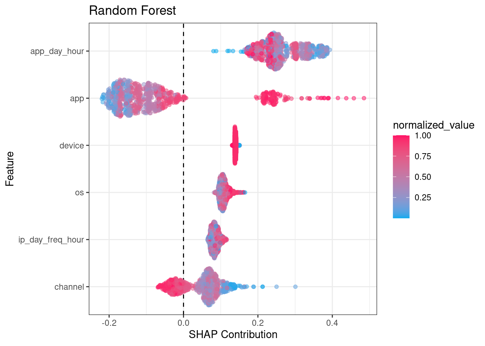
h2o.shap_summary_plot(model_gbm, h2o_teste) +
ggtitle('Gradient Boosted') + theme_bw()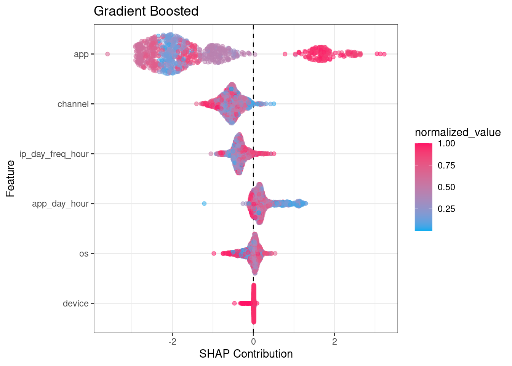
h2o.shap_summary_plot(model_xgb, h2o_teste) +
ggtitle('eXtreme Gradient Boosting') + theme_bw()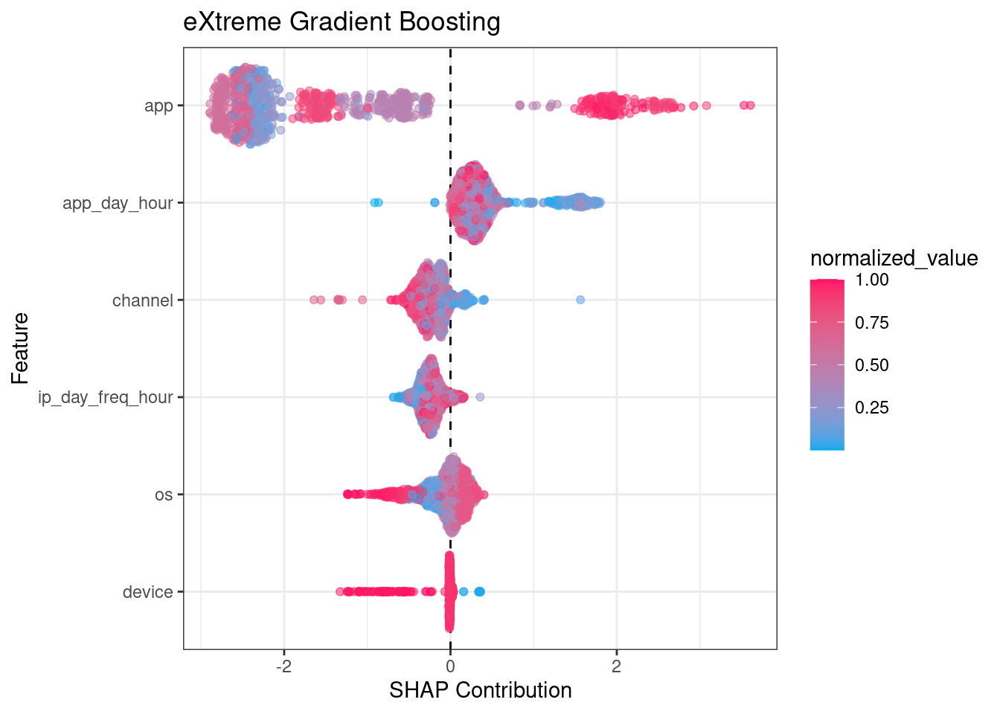
9.6 Curvas ROC dos quatro modelos
Código obtido de:9
# Plotando as curvas ROC dos quatro modelos
list(model_rf,model_gbm,model_xgb,model_stck) %>%
# Mapeia a função para cada elemento da lista
map(function(x) x %>% h2o.performance() %>%
# Para todos esses 'paths' nos objetos
.@metrics %>% .$thresholds_and_metric_scores %>%
# Extrai as taxas de verdadeiros e falsos positivos (tpr e fpr)
.[c('tpr','fpr')] %>%
# Adiciona (0,0) e (1,1) para os pontos de início e fim da curva ROC
add_row(tpr=0,fpr=0,.before=T) %>%
add_row(tpr=1,fpr=1,.before=F)) %>%
# Adiciona coluna para os nomes dos modelos para em seguida agrupar no ggplot2
map2(Modelo, function(x, y) x %>% add_column(Modelo = y)) %>%
# Agrupa os quatro datasets em um
reduce(rbind) %>%
# Plota fpr e tpr, mapeando as cores por modelos
ggplot(aes(fpr, tpr, col = Modelo))+
geom_line(size = 0.5 , linetype = "dashed")+
geom_segment(aes(x = 0,y = 0, xend = 1, yend = 1),
linetype = "dashed", col = 'darkgrey')+
xlab('Taxa de Falsos Positivos')+
ylab('Taxa de Verdaeiros Positivos')+
ggtitle('Curva ROC') + theme_bw()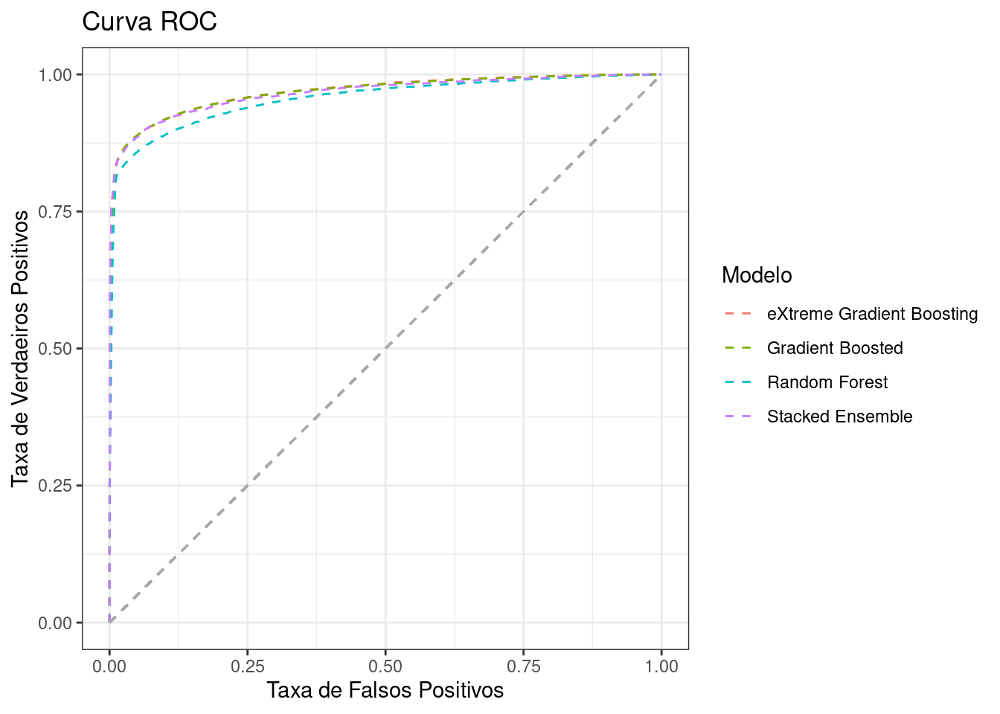
9.7 Curvas PRROC dos quatro modelos
# Plotando as curvas PRROC dos quatro modelos
list(model_rf,model_gbm,model_xgb,model_stck) %>%
# Mapeia a função para cada elemento da lista
map(function(x) x %>% h2o.performance() %>%
# Para todos esses 'paths' nos objetos
.@metrics %>% .$thresholds_and_metric_scores %>%
# Extrai as taxas de recall e precision
.[c('recall','precision')] %>%
# Adiciona (0,1) e (1,0) para os pontos de início e fim da curva PRROC
add_row(recall=0,precision=1,.before=F) %>%
add_row(recall=1,precision=0,.before=T)) %>%
# Adiciona coluna para os nomes dos modelospara em seguida agrupar no ggplot2
map2(Modelo, function(x, y) x %>% add_column(Modelo = y)) %>%
# Agrupa os quatro datasets em um
reduce(rbind) %>%
# Plota precision e recall, mapeando as cores por modelos
ggplot(aes(recall, precision, col = Modelo))+
geom_line(size = 0.5 , linetype = "dashed")+
geom_segment(aes(x = 0,y = 1, xend = 1, yend = 0),
linetype = "dashed", col = 'darkgrey')+
xlab('Recall')+
ylab('Precision')+
ggtitle('Curva PRROC') + theme_bw()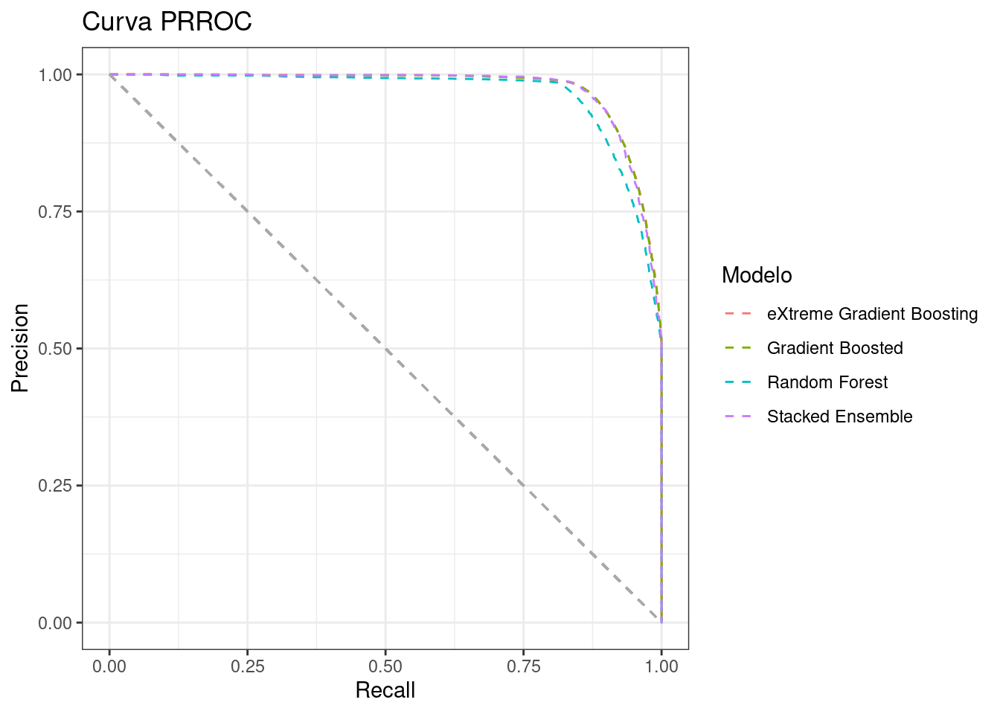
10 Resultado da Submissão ao Kaggle

11 Conclusão
Neste trabalho vimos o quanto a análise exploratória de dados pode nos indicar os caminhos para a engenharia de atributos, aplicamos a técnica de undersampling para balancear as classes e utilizamos métodos distintos para selecionar variáveis relevantes . Aplicamos aos dados quatro algoritmos de machine learning, comparamos seus desempenhos e submetemos ao Kaggle os arquivos resultantes das predições.
Comparando os resultados com os dados de treino e da submissão ao Kaggle vimos diferenças significativas, indicando provável overfitting, ou seja, algumas iterações de todo o processo são necessárias para aproximar os resultados de teste aos de treino, porém está fora do escopo deste trabalho.
12 Material de Apoio
TalkingData Exploratory Analysis and Class Imbalance
https://www.kaggle.com/kailex/talkingdata-eda-and-class-imbalance↩︎TalkingData - H2O need Something else
https://www.kaggle.com/blastchar/talkingdata-h2o-need-something-else↩︎H2O.ai Democratizando a Inteligência Artificial
https://medium.com/h2o-ai-brasil/h2o-ai-democratizando-a-intelig%C3%AAncia-artificial-99d01862b1b1↩︎Distributed Random Forest (DRF)
https://docs.h2o.ai/h2o/latest-stable/h2o-docs/data-science/drf.html↩︎Gradient Boosting Machine (GBM) http://docs.h2o.ai/h2o/latest-stable/h2o-docs/data-science/gbm.html↩︎
XGBoost
https://docs.h2o.ai/h2o/latest-stable/h2o-docs/data-science/xgboost.html↩︎Stacked Ensembles
https://docs.h2o.ai/h2o/latest-stable/h2o-docs/data-science/stacked-ensembles.html↩︎SHAP: O que é e por que usar
https://medium.com/big-data-blog/shap-o-que-%C3%A9-e-por-que-usar-6b01d37ae592↩︎How to directly plot ROC of h2o model object in R
https://stackoverflow.com/questions/44034944/how-to-directly-plot-roc-of-h2o-model-object-in-r↩︎